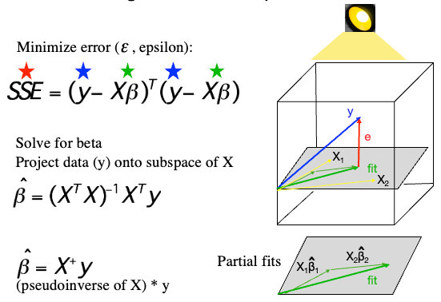

General Linear Model (GLM)#
The General Linear Model (GLM) is a statistical linear model that can be written in the form of a linear equation. It encompasses a range of models like simple linear regression, multiple regression, and analysis of variance.
This document describes the GLM with uncorrelated errors.

Model Structure#
The general formulation of the GLM is:
Where:
\( y \) is \(n \times 1\) vector of observed responses (the dependent variable).
\( X \) is the \(n \times p\) design matrix (it contains the values of the predictors, including a column of ones for the intercept).
\( \beta \) is a \(p \times 1\) vector of the parameters or coefficients.
\( \epsilon \) is the \(n \times 1\) vector of errors (residuals).
Expanded, the matrix multiplication looks like this:
This is the same as multiplying each column of \(X\) by it’s corresponding \(\beta\):
Error Structure#
The errors \( \epsilon \) are generally assumed to be normally distributed with a mean of zero and a constant variance, \(\sigma^2\):
Where \( I \) is the identity matrix.
Model Estimation#
The goal of fitting the model is to estimate \( \hat{\beta} \) so that the sum of squared errors (SSE) is minimized. This is:
Normal Equations#
For estimating the coefficients \( \beta \) in the least squares sense, we derive the normal equations. The goal is to minimize the sum of squared residuals:
Taking the derivative with respect to \( \beta \) and setting it to zero gives the normal equations:
\(X'X\) is called the Gram matrix, which is a symmetric matrix related to the predictor covariance. It is related to the Fisher Information, which in turn is related to the precision with which each parameter can be estimated.
\(X'Y\) is a product of the transpose of the design matrix and the response vector.
Estimation of Coefficients#
By solving the normal equations, given that \( X^TX \) is invertible, we get estimates of the coefficients \( \beta \):
Where \( \hat{\beta} \) represents the estimated coefficients that minimize the sum of squared residuals.
Geometrically, this is the orthogonal projection of \(y\) onto the model subspace, a \(p\)-dimensional space defined by the columns of \(X\).
The model fits \(X\hat{\beta}\) provide the fitted values, the best linear combination of columns of \(X\), where “best” minimizes the SSE.
The figure below illustrates this for a dataset with 3 data points, meaning \(y\) is a 3-length vector describing a point in 3-D space. This extends to n-D space with \(n\) independent observations. The axes are orthogonal if the observations are independent (as assumed in the GLM). \(X\) has 2 columns and spans a 2-D space (a plane). The fitted values are contained in the vector closest to the data that lies in the model subspace (in the image in algebraic terms). The error values are contained in the vector orthogonal to the fits (in the kernel in algebra) that, when added to the fits, matches the data.
 From “Practical Regression and Anova using R” by Julian Faraway, 2002
From “Practical Regression and Anova using R” by Julian Faraway, 2002
Here’s my version, with color: 
multicolinearity Importantly, the projection estimates the best overall linear combination. In an algebraic sense, the \(X_{.i}\hat{\beta}\) partial fits combine to reach the point in the model subspace closest to the data \(y\). Each \(\hat{\beta_i}\) is thus estimated “controlling for” the other predictors, and are often interpreted as the unique effects that cannot be accounted for by other predictors in the model.
If any of the predictors in \(X\) is a perfect linear combination of the other predictors, \(X\) is rank-deficient and does not span the a subspace equal to the number of predictors. In this case, there is no unique solution for \(\hat{\beta}\), and the matrix \( (X^TX)^{-1} \) is not invertible.
If predictors are correlated but still linearly independent, the variance increases in proportion to the correlation.
Residuals#
Residuals are differences between the observed values and the values predicted by the model. If a model fits well, the residuals should be randomly scattered around zero.
Where:
\(e_i\) is the residual for observation \(i\).
\(y_i\) is the observed value for observation \(i\).
\(\hat{y}_i\) is the predicted value for observation \(i\).
The residual variance is:
The residual standard deviation is \( \sqrt{var(e)} \). It is a measure of the average deviation of observations from the model’s predictions.
Degrees of freedom#
The degrees of freedom (df) is the number of dimensions along which a quantity can vary. In the GLM, df are associated with both the model and the error. The model df is the dimensionality of the space spanned by the combination of parameters \(\beta\). The error df, or dfe, is the dimensionality of the space spanned by \(\epsilon\).
In both cases, the dimensionality is equal to the number of independent parameters or errors. In the case of model df, it is generally equal to the number of parameters, assuming none of the predictors in X are redundant.
In the case of error df, assuming the errors are independent, it is the number of observations (\(n\)) minus the number of model parameters estimated, including the intercept (\(p\)). For example, if there are 3 independent observations and one model parameter estimated (the intercept, which estimates the sample mean in this case), there are only 2 independent dimensions along which the errors can vary. (Once you know the mean and two observations, you can calculate the third). In algebraic terms they span a two-dimensional plane. Thus, the dfe are n - 1 in this simple case. This is the ReML estimator for the sample variance.
Standard Error of \(\hat{\beta}\) in the General Linear Model#
In the context of the General Linear Model, the standard errors of the estimated coefficients, \(\hat{\beta}\)s, quantifies the uncertainty associated with the estimates. They provide crucial information for hypothesis testing and for constructing confidence intervals around \(\hat{\beta}\)s.
The standard error is a measure of the expected average deviation of the model’s parameter estimates \(\hat{\beta}\) given the sampling error \( var(e) \). In general, it is related to \( var(e) / sqrt(dfe) \), where \(dfe\) is the error degrees of freedom. This is due to the Central Limit Theorem, which posits that the error of an estimate is inversely proportional to \( \sqrt{n} \).
The covariance of \(\hat{\beta}\) is given by:
Where:
\(\sigma^2\) is the variance of the residuals.
\(X\) is the design matrix.
From this, the standard error (SE) of each \(\hat{\beta}_i, i=1...p\) is the square root of its variance:
where \(ii\) denotes the \(i\)th diagonal element of the \(p x p\) matrix \( \text{Var}(\hat{\beta}) \).
The standard error provides a measure of the variability or dispersion of the estimator. A smaller standard error indicates a more stable estimator. When conducting hypothesis tests, a larger standard error (relative to the magnitude of \(\hat{\beta}\)) might make it harder to reject the null hypothesis that the coefficient is zero, since the coefficient estimate is less precise.
More precisely, the \( SE(\hat{\beta_i}) \) is the denominator of the t-statistic that forms the basis for parametric inferences (hypothesis tests).
The standard error is influenced by the sample size. With larger sample sizes, the standard error tends to decrease, which leads to more precise estimates.
Metrics of overall model fits#
Model fit indicates how well a statistical model describes the observed data. When creating predictive models, we want our model to represent the underlying data structure accurately. There are various measures and statistics to gauge the fit of a model.
Coefficient of Determination (\(R^2\))#
The coefficient of determination, often denoted as \(R^2\), measures the proportion of variance in the dependent variable that is predictable from the independent variable(s).
Where:
\(SS_{\text{res}}\) is the residual sum of squares.
\(SS_{\text{tot}}\) is the total sum of squares.
A value of \(R^2\) close to 1 suggests that a large proportion of the variability in the outcome has been explained by the regression model. A low \(R^2\) indicates otherwise.
Akaike Information Criterion (AIC) and Bayesian Information Criterion (BIC)#
Both AIC and BIC are criteria used for model selection. They consider the goodness of fit of the model and the complexity of the model.
Lower values of AIC or BIC suggest a better-fitting model. When comparing multiple models, the one with the lowest AIC or BIC can often be considered the best fit, taking into account both the goodness of fit and model complexity.